การเขียนโปรแกรมควบคุม FNIRSI DPS-150 DC Supply ด้วยภาษา Python#
Keywords: FNIRSI DPS-150, Programmable DC Supply, Python, I-V Curve Tracing
▷ FNIRSI DPS-150 Programmable DC Switching Power Supply#
บทความนี้นำเสนอตัวอย่างการเขียนโปรแกรมโดยใช้ภาษา Python เพื่อสื่อสารผ่านพอร์ตอนุกรม Serial และควบคุมการทำงานของอุปกรณ์ DPS-150 ซึ่งเป็นแหล่งจ่ายไฟแบบ Regulated DC Switching มีเอาต์พุต 1 ช่อง ของบริษัท FNIRSI (เนอร์สิ) จากประเทศจีน
คุณสมบัติของอุปกรณ์ DPS-150:
- Input Supply:
- PD / QC fast charger: USB Type Port
- Power bank: 5V / 2A, USB Type Port
- DC power adapters: 5V ~ 30V, DC Jack
- Input Voltage: DC 5.0V ~ 32V (Undervoltage lockout if below 5.0V)
- Input Current: 100mA ~ 5A
- Output Voltage: 0 ~ 30V (Resolution: 10mV)
- Output Current: 0 ~ 5A (Resolution: 1mA)
- Output Power: 150W (max.) (@30V / 5A)
- Output Connector: 4mm Banana Jack
- IPS Screen: 4-Digit, 2.8 Inch (320x240 pixels)
- Protection:
- Over-voltage Protection (OVP)
- Over-current Protection (OCP)
- Short Circuit Protection
- Over Power Protection OPP
- Undervoltage Protection LVP
- Reverse Connection Protection REP
- Over-temperature Protection OTP
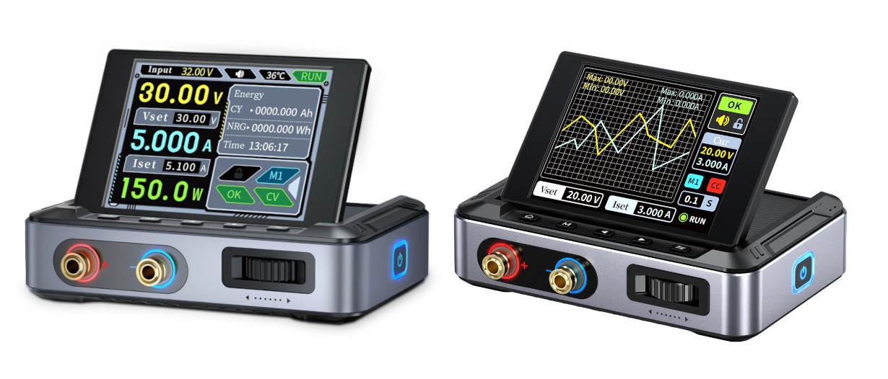
รูป: อุปกรณ์ DPS-150
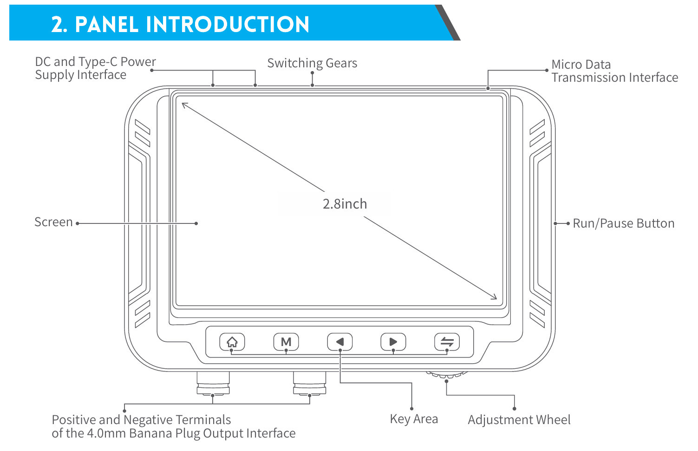
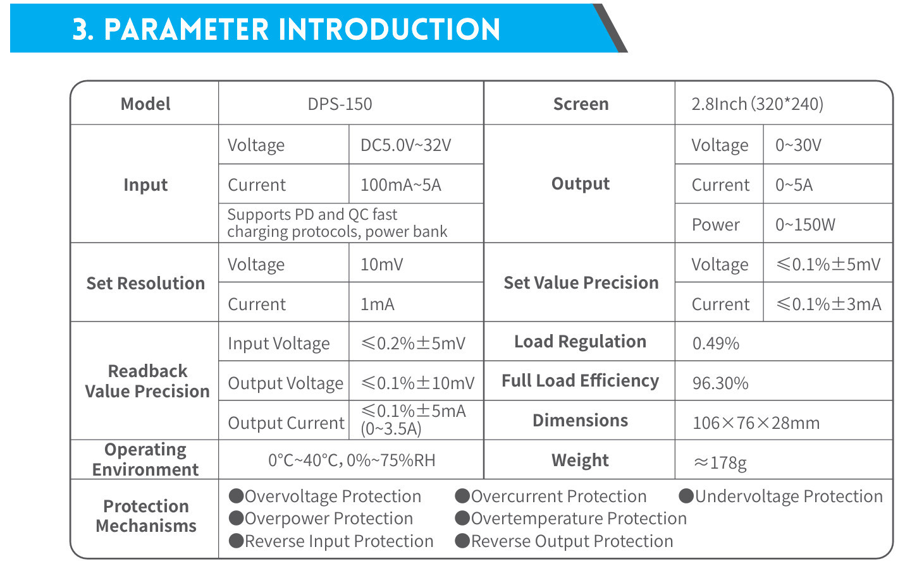
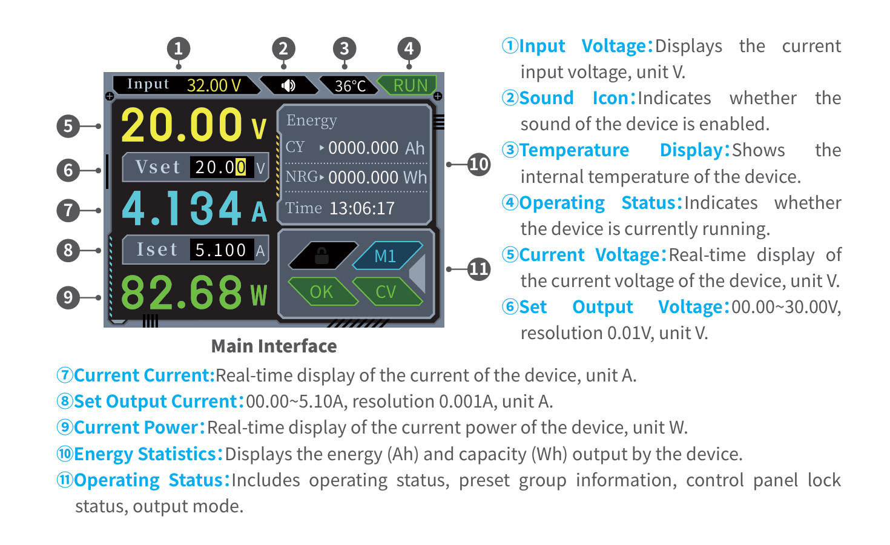
รูป: ตัวอย่างข้อมูลจากคู่มือการใช้งาน (DSP-150 User Manual)
ในการใช้งาน แนะนำให้ผู้ใช้ตรวจสอบ การตั้งพิกัดค่าป้องกันของอุปกรณ์ DPS1-50 ได้แก่
- แรงดันและกระแสไฟฟ้าสูงสุด (Over Voltage & Over Current)
- กำลังไฟฟ้าสูงสุด (Over Power0)
- อุณหภูมิสูงสุด (Over Temperature)
- แรงดันขั้นต่ำ (Under Voltage)
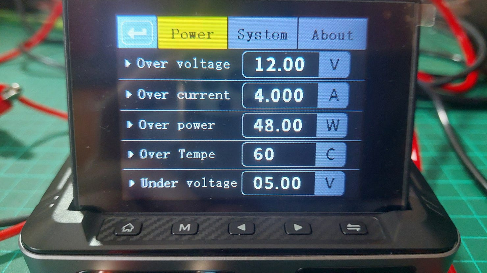
รูป: ตัวอย่างการตั้งค่าระบบป้องกันของ DPS-150
ในการทดลองใช้งานได้ลองใช้ทั้ง DC Power Supply และ100W GaN PD Fast Charger เป็นแหล่งจ่ายให้กับ DSP-150 โดยจะป้อนแรงดันอินพุตได้ 20V โดยประมาณ
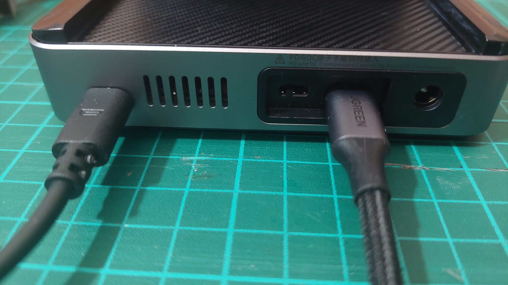
รูป: พอร์ต Micro-USB เชื่อมต่อกับคอมพิวเตอร์ (ซ้าย) และช่องรับแรงดันไฟเลี้ยงจาก PD Fast Charger ผ่าน USB Type-C (ขวา)
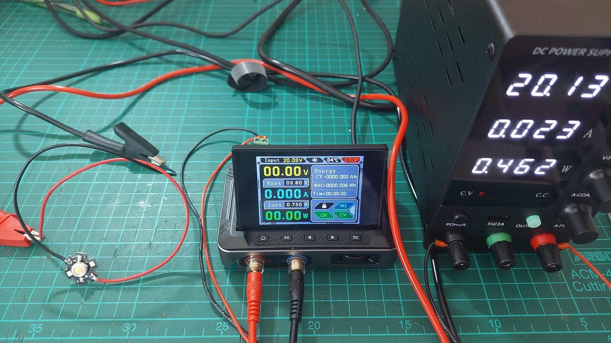
รูป: ตัวอย่างการใช้แรงดันอินพุต DC จากแหล่งจ่ายภายนอก
ในส่วนของซอฟต์แวร์ที่เกี่ยวข้อง ผู้ใช้สามารถดาวน์โหลดและติดตั้งซอฟต์แวร์ของบริษัท Fnirsi เพื่อใช้งานกับ DPS-150 สำหรับระบบปฏิบัติการ Windows และสามารถเชื่อมต่อกับอุปกรณ์ผ่านทางพอร์ต USB ได้
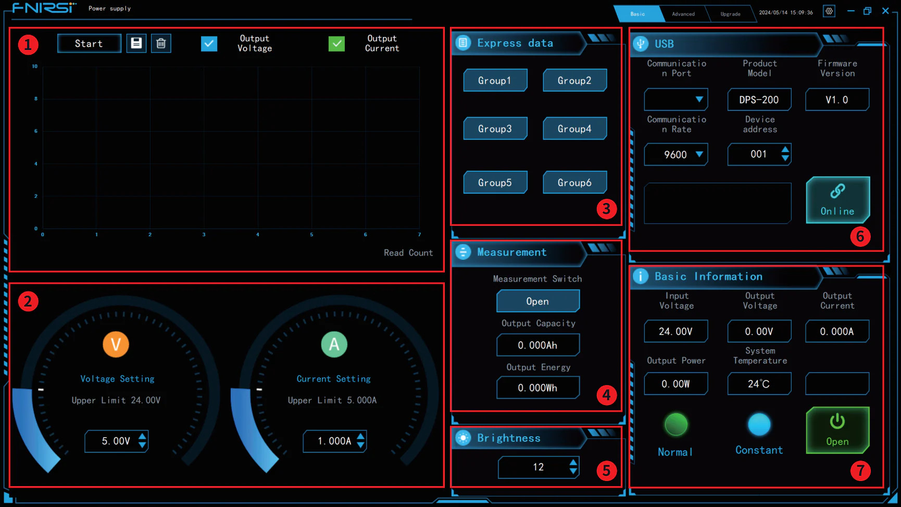
รูป: ตัวอย่าง GUI ของโปรแกรมสำหรับอุปกรณ์ของ FNIRSI
แม้ว่าทางบริษัทไม่ได้เปิดเผย API หรือ เอกสารเกี่ยวกับรูปแบบการสื่อสารข้อมูลกับอุปกรณ์
แต่ก็มีนักพัฒนาได้เผยแพร่ตัวอย่างโค้ด เช่น cho45/fnirsi-dps-150 ซึ่งใช้ภาษา Nodejs ที่สามารถสื่อสารกับอุปกรณ์ได้ แต่ในบทความนี้ จะลองเขียนโค้ดด้วยภาษา Python
▷ การเขียนโปรแกรมควบคุมการทำงาน#
FNIRSI DPS-150 เชื่อมต่อกับคอมพิวเตอร์ผู้ใช้ โดยใช้สาย Micro-USB ซึ่งจะมองเห็นเป็นพอร์ตอนุกรม (USB Serial Port) มีค่า Baudrate เท่ากับ 115200
การเขียนโค้ดด้วย Python ในบทความนี้ ได้ใช้ระบบปฏิบัติการ Ubuntu 22.04 ในการทดสอบ
ดังนั้นให้เชื่อมต่ออุปกรณ์กับเครื่องคอมพิวเตอร์ แล้วทำคำสั่ง lsusb เพื่อดูว่า สามารถมองเห็นอุปกรณ์
Vendor ID (VID) และ Product ID (PID) ตรงกับ 0x2e3c:0x5740 หรือไม่
$ lsusb | grep "2e3c:5740"
Bus 001 Device 077: ID 2e3c:5740 Artery AT32 Virtual Com Port
ชื่อพอร์ตที่ใช้งานคือ /dev/ttyACM0
ถัดไปให้ติดตั้งไลบรารีสำหรับ Python ต่อไปนี้ เพื่อใช้ในการทดลองเขียนโค้ด
$ pip3 install pyserial matplotlib numpy scipy
ลองมาดูตัวอย่างการสร้างคลาส DPS150 ในไฟล์ที่มีชื่อว่า dps150.py
การควบคุมและตั้งค่าการใช้งานอุปกรณ์ DPS-150 จะต้องมีการส่งชุดคำสั่งและข้อมูลไบต์
โดยใช้คำสั่ง sendCommand(...) และมีการอ่านชุดข้อมูลไบต์ตอบกลับมา
โดยใช้คำสั่ง getResponse(...) ซึ่งจะมีการอ่านข้อมูลไบต์ซ้ำหลายครั้ง
เพื่อตรวจสอบและอัปเดตค่าและสถานะการทำงานของอุปกรณ์ และเก็บไว้ในตัวแปรภายในที่มีชื่อว่า values ดังนี้
values[ 'input_voltage' ]ค่าแรงดันอินพุตจากแหล่งจ่ายภายนอก [V]values[ 'voltage_max' ]ค่าแรงดันไฟฟ้าเอาต์พุตสูงสุด [V] ซึ่งจะต่ำกว่าแรงดันอินพุตจากแหล่งจ่ายภายนอกvalues[ 'current_max' ]ค่ากระแสไฟฟ้าเอาต์พุตสูงสุด [A]values[ 'voltage' ]แรงดันไฟฟ้าเอาต์พุตที่วัดได้ [V]values[ 'current' ]กระแสไฟฟ้าเอาต์พุตที่วัดได้ [A]values[ 'power' ]กำลังไฟฟ้าเอาต์พุตที่วัดได้ [W]values[ 'capacity' ]ปริมาณประจุไฟฟ้าที่ได้จากการชาร์จแบตเตอรี่ [Ah]values[ 'energy' ]พลังงานไฟฟ้าที่ใช้ไป [Wh]values[ 'temperature' ]อุณหภูมิภายในอุปกรณ์ [°C]values[ 'ctrl_mode' ]สถานะของโหมดเอาต์พุต: CV=Constant Voltage Output และ CC=Constant Current Output
File: dps150.py
import serial
import struct
class DPS150:
def __init__(self, port: str, baudrate: int=115200, timeout: float=0.2):
# Open the serial port
self.ser = serial.Serial(port, baudrate=baudrate, timeout=timeout)
# Reset the serial input buffer
self.ser.reset_input_buffer()
# Initialize a dict object to store values of DSP-150.
self.values = {
'input_voltage': 0.0,
'voltage_max': 0.0,
'current_max': 0.0,
'voltage': 0.0,
'current': 0.0,
'power': 0.0,
'energy': 0.0,
'capacity': 0.0,
'temperature': 0.0,
'ctrl_mode': 'CV' # CV or CC mode
}
# Enable output message.
self.sendCommand(0xC1, 0x00, bytes([0x01]))
@staticmethod
def checksum(data: bytes) -> int:
"""Calculate checksum as the sum of all bytes modulo 256."""
return sum(data) % 256
def sendCommand(self, command: int, data_type: int, data: bytes):
"""Send a command sequence to the DPS-150 power supply."""
packet = bytearray([0xF1, command, data_type, len(data)]) + data
packet.append(self.checksum(packet[2:]))
self.ser.write(packet)
self.ser.flush()
def getResponse(self) -> bytes:
"""Get and process data from the DPS-150 power supply."""
while True:
start_byte = self.ser.read(1)
if start_byte and start_byte[0] == 0xF0:
break
header = self.ser.read(3)
if len(header) < 3:
print("Incomplete header")
return None
cmd, data_type, data_length = header
if cmd != 0xA1:
print("Invalid command byte!")
return None
# Read data bytes with checksum
data_checksum = self.ser.read(data_length + 1)
if len(data_checksum) < data_length + 1:
print("Incomplete data and checksum")
return None
data, recv_checksum = data_checksum[:-1], data_checksum[-1]
if recv_checksum != self.checksum(header[1:] + data):
print("Invalid checksum")
return None
self.processData(data_type, data)
return start_byte + header + data_checksum
def processData(self, data_type: int, data: bytes):
"""Parse received data and update measurements."""
if data_type == 0xC0:
self.values['input_voltage'] = struct.unpack('<f', data[:4])[0]
elif data_type == 0xC3:
self.values.update({
'voltage': struct.unpack('<f', data[:4])[0],
'current': struct.unpack('<f', data[4:8])[0],
'power' : struct.unpack('<f', data[8:12])[0]
})
elif data_type == 0xDA:
self.values['energy'] = struct.unpack('<f', data[:4])[0]
elif data_type == 0xD9:
self.values['capacity'] = struct.unpack('<f', data[:4])[0]
elif data_type == 0xE2:
self.values['voltage_max'] = struct.unpack('<f', data[:4])[0]
elif data_type == 0xE3:
self.values['current_max'] = struct.unpack('<f', data[:4])[0]
elif data_type == 0xDD:
self.values['ctrl_mode'] = ['CC', 'CV'][int(data[0])]
elif data_type == 0xC4:
self.values['temperature'] = struct.unpack('<f', data[:4])[0]
def setOutput(self, voltage: float, current: float = 0.0):
"""Set the output voltage and current limit."""
self.sendCommand(0xB1, 0xC1, struct.pack('<f', voltage))
if current > 0.0:
self.sendCommand(0xB1, 0xC2, struct.pack('<f', current))
def enableOutput(self, enable: bool):
"""Enable or disable the power output."""
self.sendCommand(0xB1, 0xDB, bytes([0x01 if enable else 0x00]))
def enableMetering(self, enable: bool):
"""Enable or disable measurement."""
self.sendCommand(0xB1, 0xD8, bytes([0x01 if enable else 0x00]))
def printValues(self):
"""Clear protection mode."""
params = [ ('input_voltage', 'V'),
('voltage_max', 'V'),
('current_max', 'A'),
('voltage', 'V'),
('current', 'A'),
('power', 'W'),
('energy', 'Wh'),
('capacity','Ah'),
('temperature', 'deg.C'),
('ctrl_mode', '') ]
for param in params:
name, unit = param
value = self.values[ name ]
if isinstance(value, float):
value = round(value, 2)
print( f"{name}: {value} {unit}" )
def close(self):
# disable output message
self.sendCommand(0xC1, 0x00, bytes([0x00]))
"""Close the serial connection."""
self.ser.flush()
self.ser.close()
▷ ตัวอย่างการเขียนโค้ดทดสอบกับตัวต้านทาน#
ถัดไปเป็นตัวอย่างการเขียนโค้ด โดยใช้คลาสจากไฟล์ dsp150.py เพื่อกำหนดระดับแรงดันไฟเลี้ยง
แล้ววัดกระแสไฟฟ้าที่จ่ายให้ตัวต้านทาน 1Ω (+/-5%) / 50W ซึ่งถูกใช้เป็นโหลดไฟฟ้าของอุปกรณ์ DPS150
แรงดันไฟฟ้าเอาต์พุตจะค่อย ๆ เพิ่มขึ้นตามลำดับ ในช่วงที่กำหนดไว้ และข้อมูลที่ได้จากการทดลอง
จะถูกนำมาแสดงรูปกราฟ ซึ่งจะได้เป็นกราฟเส้นตรงและเป็นไปตามกฎของโอห์ม
ในการแสดงรูปกราฟ ให้แกนนอนเป็นแรงดันไฟฟ้า และแกนตั้งเป็นปริมาณกระแสไฟฟ้า ข้อมูลที่ได้จะถูกนำไปผ่านขั้นตอนที่เรียกว่า Curve Fitting ซึ่งก็คือ การหาสมการของเส้นโค้งหรือฟังก์ชันที่เหมาะสมที่สุดสำหรับชุดข้อมูล แต่ในกรณีจะได้สมการเส้นตรง
File: dps150_resistor_test.py
import time
from dps150 import *
import numpy as np
import matplotlib.pyplot as plt
from scipy.interpolate import CubicSpline
import numpy as np
import matplotlib.pyplot as plt
def plotDataLinearFit(voltages, currents):
print("Performing linear curve fitting and plotting the data")
try:
# Perform linear fit: I = m*V + c
coeffs = np.polyfit(voltages, currents, 1)
m, c = coeffs
print(f"Fitted linear equation: I = {m:.4f}*V + {c:.4f}")
# Generate more points for the fitted line
npoints = 10 * len(voltages)
fit_voltages = np.linspace(min(voltages), max(voltages), npoints)
fit_currents = m * fit_voltages + c
# Format equation as a string
equation_str = f"I = {m:.4f}·V + {c:.4f}"
except Exception as e:
print("Curve fitting failed!", e)
fit_voltages = voltages
fit_currents = currents
equation_str = "Fit failed"
# Plot V-I curve
fig = plt.figure(figsize=(10, 6))
fig.canvas.manager.set_window_title("DC Sweep Demo")
plt.plot(voltages, currents, 'o', ms=2.0, color='#0000ff')
plt.plot(fit_voltages, fit_currents, '-', color='#00aaff')
# Annotate linear equation on the plot
plt.text(0.6, 0.95, equation_str, transform=plt.gca().transAxes,
fontsize=12, verticalalignment='top',
bbox=dict(boxstyle="round", alpha=0.2))
plt.xlabel("Voltage (V)")
plt.ylabel("Current (A)")
plt.title("V-I Curve")
plt.legend('',frameon=False)
plt.grid()
plt.savefig("plot.png", dpi=300, bbox_inches='tight')
plt.show()
def main():
print("Connecting to DSP-150...")
# Open a serial connection to the DSP-150 device
dps = DPS150('/dev/ttyACM0')
dps.enableOutput(False)
dps.enableMetering(True)
time.sleep(0.5)
V_START = 0.0
V_END = 4.0 # Volt
current_limit = 4.0 # Ampere
print( f"Set output to 0.0V with current limit: {current_limit}A")
dps.setOutput( voltage=0.0, current = current_limit )
time.sleep(0.1)
print( "Enable output...")
dps.enableOutput(True)
time.sleep(0.1)
voltages = []
currents = []
try:
prev_volt = -0.01
volt = V_START
current = 0
running = True
while running: # DC voltage sweep
dps.setOutput(volt) # Set output voltage
time.sleep(0.25)
for _ in range(8):
dps.getResponse()
if dps.values['voltage'] > prev_volt:
prev_volt = dps.values['voltage']
print(f"V={prev_volt:.2f}V, "
f"I={dps.values['current']:.3f}A, "
f"P={dps.values['power']:.2f}W, "
f"Mode={dps.values['ctrl_mode']}")
voltages.append( dps.values['voltage'] )
current = dps.values['current']
currents.append( current )
time.sleep(0.01)
#dps.printValues()
if dps.values['ctrl_mode']=='CC' and dps.values['current'] > 0.0:
print("Current Limit...")
running = False
break
if prev_volt > 0.01 and prev_volt > dps.values['voltage']:
running = False
volt += 0.2
if volt > V_END:
running = False
time.sleep(0.1)
print("Disabling output...")
dps.enableOutput(False)
plotDataLinearFit( voltages, currents )
except KeyboardInterrupt:
print("Terminated...")
finally:
print("Disabling output...")
dps.enableOutput(False)
dps.setOutput(0, 0.01)
time.sleep(0.1)
dps.enableOutput(True)
time.sleep(0.2)
dps.enableOutput(False)
dps.close()
if __name__ == "__main__":
main()
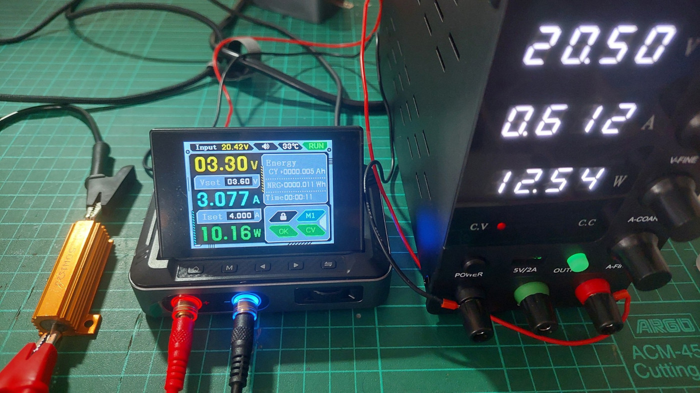
รูป: ตัวอย่างอุปกรณ์ที่ใช้ในการทดลอง
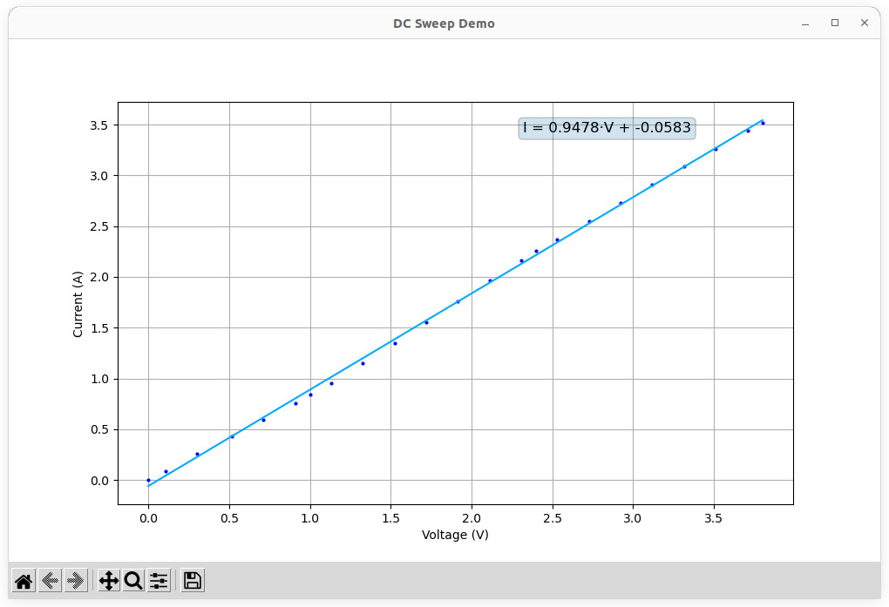
รูป: กราฟจากการทดสอบจ่ายแรงดันไฟฟ้าและวัดกระแสไฟฟ้าให้กับตัวต้านทาน 1Ω / 50W
จากรูปกราฟ ค่าความชันได้เท่ากับ 0.9478 ดังนั้นสามารถนำไปคำนวณหาค่าความต้านทานได้เท่ากับ =1/0.9478 หรือ 1.055Ω
▷ ตัวอย่างการเขียนโค้ดทดสอบกับ LED#
ถัดไปเป็นตัวอย่างโค้ดที่ใช้ในการทดสอบ 3W LED (กำลังสูง) โดยปรับแรงดันไฟฟ้าขึ้นจาก 0V
ไปจนถึง 4.0V ถ้ากระแสที่ไหลผ่าน LED ไม่เกินพิกัดกระแสไฟฟ้าที่กำหนดไว้คือ 0.75A
File: dps150_led_test.py
import time
from dps150 import *
import numpy as np
import matplotlib.pyplot as plt
from scipy.interpolate import CubicSpline
def plotDataCubicSpline( voltages, currents ):
# Perform Cubic Spline interpolation
print( "Performing curve fitting and plot the data" )
try:
# Perform cubic spline interpolation
cs = CubicSpline(voltages, currents)
# Generate more points for the fitted curve
npoints = 10*len(voltages)
fit_voltages = np.linspace(min(voltages), max(voltages), npoints)
fit_currents = cs(fit_voltages)
except RuntimeError:
print("Curve fitting failed!")
fit_currents = currents # Use measured data
# Plot V-I curve
fig = plt.figure( figsize=(10,6) )
fig.canvas.manager.set_window_title("DC Sweep Demo")
# Plot the measured data and fitted spline curve
plt.plot(voltages, currents, 'o', ms=2.0, color='#0000ff')
plt.plot(fit_voltages, fit_currents, '-', color='#00aaff')
plt.xlabel("Voltage (V)")
plt.ylabel("Current (A)")
plt.title("V-I Curve: High-Power LED Testing")
plt.legend('',frameon=False)
plt.grid()
plt.savefig("plot.png", dpi=300, bbox_inches='tight')
plt.show()
def main():
print("Connecting to DSP-150...")
# Open a serial connection to the DSP-150 device
dps = DPS150('/dev/ttyACM0')
dps.enableOutput(False)
dps.enableMetering(True)
time.sleep(0.5)
V_START = 0.0
V_END = 4.0 # Volt
current_limit = 0.75 # Ampere
print( f"Set output to 0.0V with current limit: {current_limit}A")
dps.setOutput( voltage=0.0, current = current_limit )
time.sleep(0.1)
print( "Enable output...")
dps.enableOutput(True)
time.sleep(0.1)
voltages = []
currents = []
try:
prev_volt = -0.01
volt = V_START
current = 0
running = True
while running: # DC voltage sweep
dps.setOutput(volt) # Set output voltage
time.sleep(0.25)
for _ in range(8):
dps.getResponse()
if dps.values['voltage'] > prev_volt:
prev_volt = dps.values['voltage']
print(f"V={prev_volt:.2f}V, "
f"I={dps.values['current']:.3f}A, "
f"P={dps.values['power']:.2f}W, "
f"Mode={dps.values['ctrl_mode']}")
voltages.append( dps.values['voltage'] )
current = dps.values['current']
currents.append( current )
time.sleep(0.01)
#dps.printValues()
if dps.values['ctrl_mode']=='CC' and dps.values['current'] > 0.0:
print("Current Limit...")
running = False
break
if prev_volt > 0.01 and prev_volt > dps.values['voltage']:
running = False
volt += 0.2
if volt > V_END:
running = False
time.sleep(0.1)
print("Disabling output...")
dps.enableOutput(False)
plotDataCubicSpline( voltages, currents )
except KeyboardInterrupt:
print("Terminated...")
finally:
print("Disabling output...")
dps.enableOutput(False)
dps.setOutput(0, 0.01)
time.sleep(0.1)
dps.enableOutput(True)
time.sleep(0.1)
dps.enableOutput(False)
dps.close()
if __name__ == "__main__":
main()
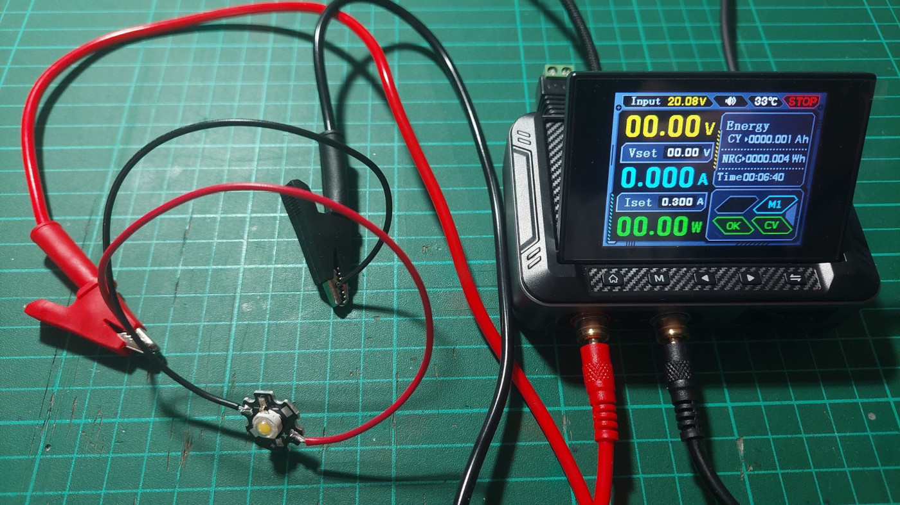
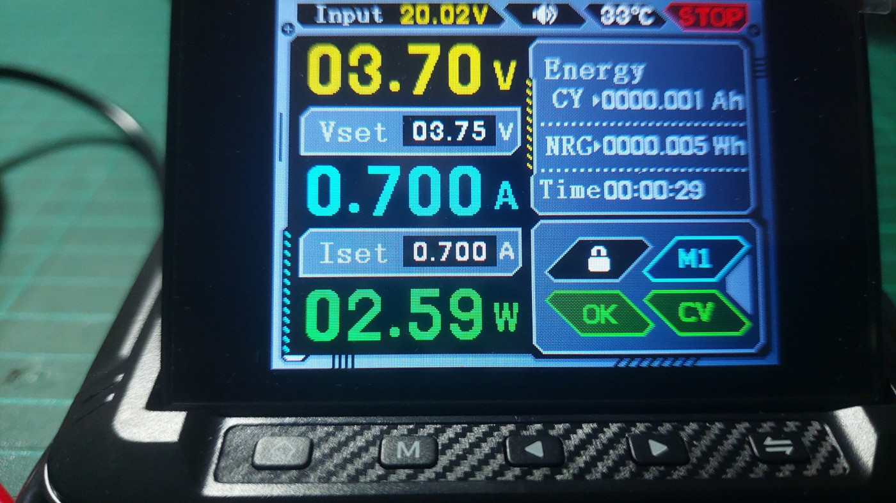
รูป: ตัวอย่างการทดสอบ 3W LED
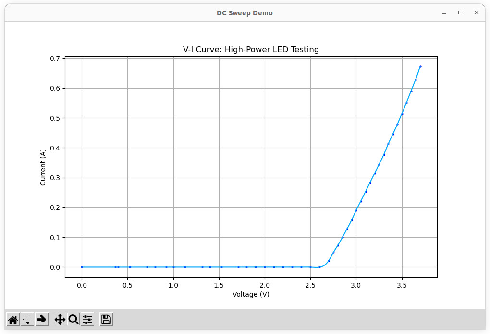
รูป: กราฟแสดงความสัมพันธ์ระหว่างกระแสและแรงดันไฟฟ้าของ 3W LED ที่ได้จากการทดสอบ
จากรูปกราฟ จะได้ค่า V=3.71V, I=0.685A, P=2.54W ก่อนเข้าสู่โหมด OCP ของอุปกรณ์ DPS-150
อีกตัวอย่างหนึ่งคือ การทดสอบแผง LED ที่มีการนำ LED แบบ SMD หลาย ๆ ตัว (50 ดวง) มาต่อขนานกัน ใช้กับแรงดันไฟฟ้าประมาณ 3.2V ~ 3.5V
ตั้ง่ค่า Vmax=3.5V, Imax=4.5A และวัดค่าก่อนเข้าสู่โหมด OCP ได้ดังนี้ V=3.35V, I=4.271A, P=14.31W
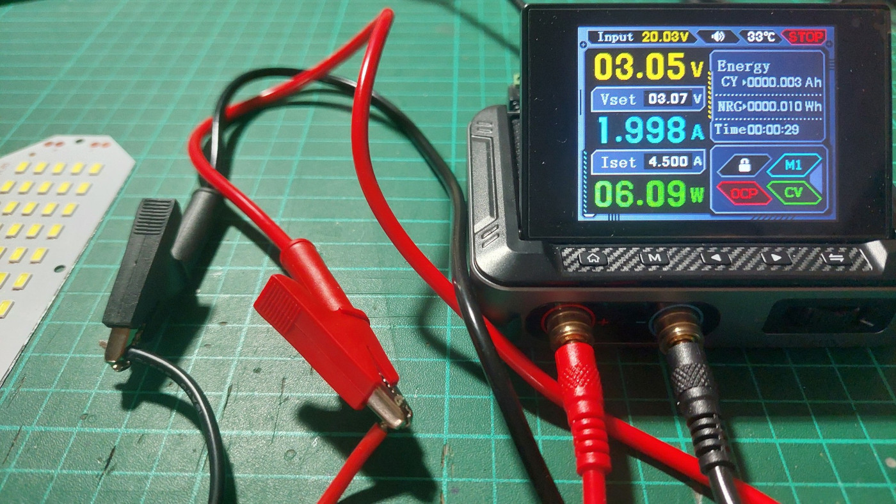
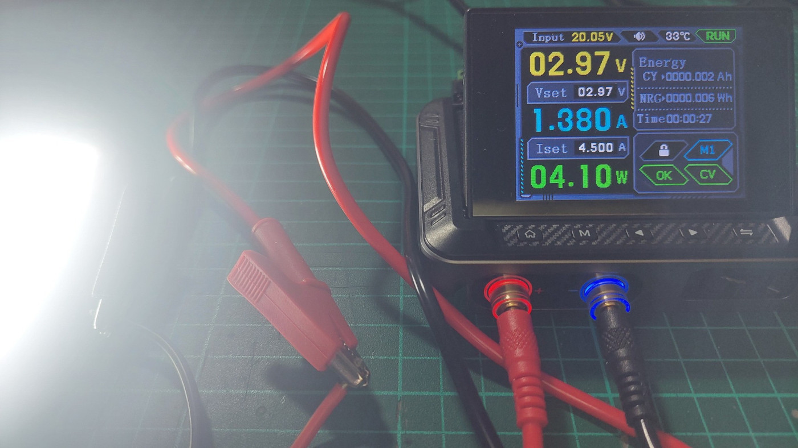
รูป: ตัวอย่างการทดสอบ 50-LED Panel
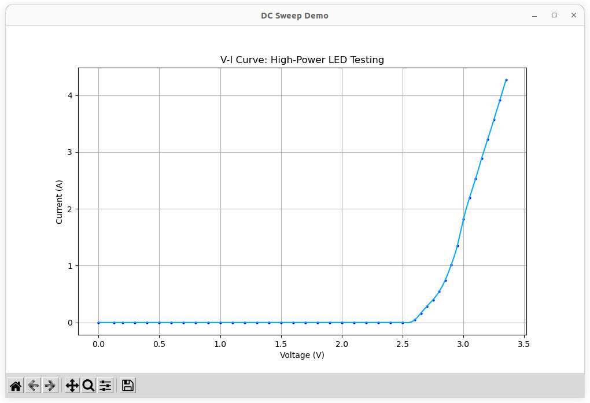
รูป: กราฟแสดงความสัมพันธ์ระหว่างกระแสและแรงดันไฟฟ้าของ LED Panel ที่ได้จากการทดสอบ
▷ กล่าวสรุป#
บทความนี้ได้นำเสนอโค้ด Python ที่สามารถใช้ในการควบคุมการทำงานและอ่านค่าปริมาณทางไฟฟ้าจากอุปกรณ์ DPS-150 DC Supply และมีการสาธิตการทดสอบ LED โดยปรับค่าแรงดันไฟฟ้าในช่วงที่กำหนด หรือ DC Sweep และตั้งค่าพิกัดกระแสสูงสุด ข้อมูลที่จากการทดลองสามารถนำไปแสดงรูปกราฟได้โดยอัตโนมัติ
This work is licensed under a Creative Commons Attribution-ShareAlike 4.0 International License.
Created: 2025-04-03 | Last Updated: 2025-04-04